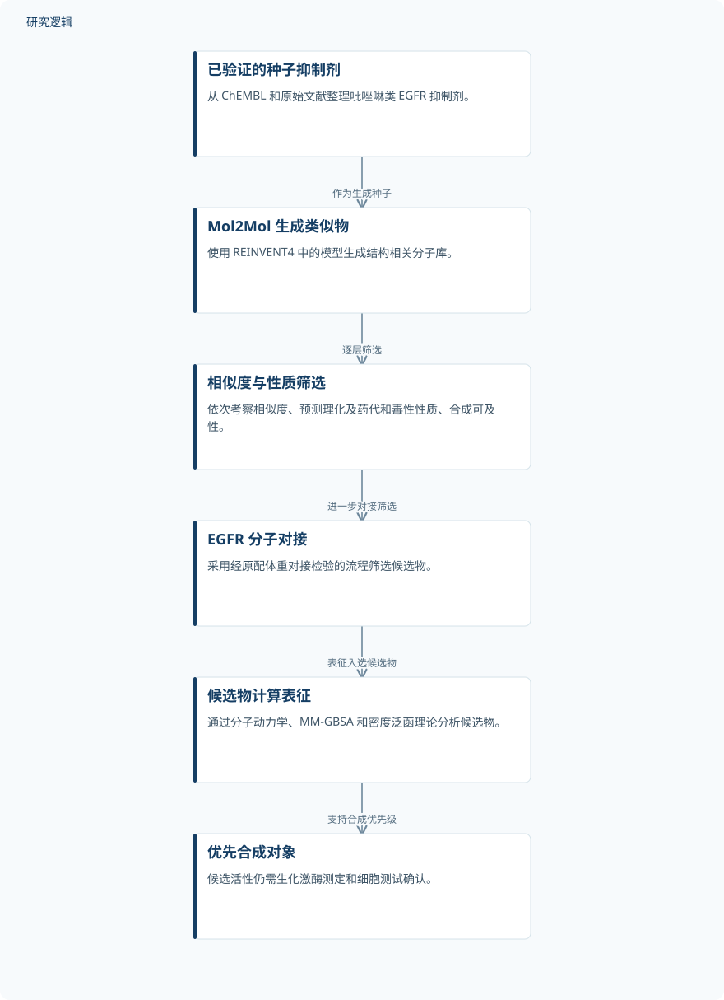

摘要解读
基于吡唑啉的EGFR激酶抑制剂候选物生成式设计与计算表征
Generative design and computational characterization of pyrazoline-based EGFR kinase inhibitor candidates.
解读更新 2026-10-29 09:38 · 依据公开摘要整理，未核验全文细节
生成模型提出的分子，如何成为值得优先合成的候选物？这项研究围绕靶向 EGFR 的吡唑啉类似物，将生成式机器学习与物理建模串联起来。阅读价值在于理解计算筛选如何支持候选排序，而非将预测结果等同于药效验证。
文章目录
从已知吡唑啉骨架寻找 EGFR 候选物
EGFR 是乳腺癌、结直肠癌和非小细胞肺癌中已确立的治疗靶点，含吡唑啉的骨架也已多次被报道具有 EGFR 抑制活性。本研究针对 EGFR 激酶的 ATP 结合位点，尝试从已有活性分子出发，生成并计算表征相关类似物。
先生成类似物，再逐层筛选与表征
研究从 ChEMBL 和原始文献整理了 50 个经实验验证的吡唑啉类 EGFR 抑制剂，作为 REINVENT4 中 Mol2Mol 模型的种子，生成结构相关的分子库。随后依次依据 Tanimoto 相似度（≥0.6）、预测理化及药代动力学和毒性性质、合成可及性（SA score <6），以及分子对接进行筛选。
对接采用 EGFR 激酶结构 PDB 5U8L，并通过原配体重对接检验流程，重对接 RMSD 为 1.342 Å。研究还使用分子动力学、MM-GBSA 端点计算和密度泛函理论，分别考察复合物稳定性、估算结合自由能及分析电子结构。
依据摘要整理的候选分子筛选过程


仅概括摘要明确陈述的生成、筛选与计算表征关系，不代表论文原图，也不表示候选活性已获实验验证。
下载 SVG图示关系说明
实线表示相邻阶段的信息流，虚线表示跨阶段联系或反馈。
已验证的种子抑制剂 → Mol2Mol 生成类似物：作为生成种子；Mol2Mol 生成类似物 → 相似度与性质筛选：逐层筛选；相似度与性质筛选 → EGFR 分子对接：进一步对接筛选；EGFR 分子对接 → 候选物计算表征：表征入选候选物；候选物计算表征 → 优先合成对象：支持合成优先级
计算结果支持候选优先级，而非已证实活性
筛出的 PyEG1–PyEG5 对接评分为 -9.5 至 -10.6 kcal/mol，比重对接原配体的 -9.2 kcal/mol 更有利。摘要报告，这些复合物在 100 ns 分子动力学模拟中保持稳定，骨架 RMSD ≤ 0.27 nm，平均配体 RMSD ≤ 0.18 nm，回转半径接近参考复合物。
MM-GBSA 估算中，PyEG5 的结合自由能为 -37.5 ± 2.5 kcal/mol，接近参考配体的 -37.6 ± 6.0 kcal/mol。电子结构计算预测 PyEG2 和 PyEG5 反应性最高，PyEG3 动力学稳定性最高。基于预测结合模式的分析还提示，与 Met793 的氢键及与 Phe856 的 π-π 堆积是预测亲和力的重要影响因素。
模拟稳定不等于抑制活性得到验证
上述发现完全来自计算，候选物应被视为优先合成对象，其活性仍需生化激酶测定和细胞测试确认。仅凭摘要，无法判断生成库的具体规模、种子集的代表性、模拟重复设置，以及更广泛的对照和验证范围；这些信息未在摘要交代，不代表全文没有开展。
阅读启发：关注生成之后的证据如何衔接
阅读启发：这项工作的重点不只是生成分子，还在于用不同计算方法逐步缩小候选范围。进一步阅读时，可关注筛选条件如何影响最终候选，以及对接评分、动力学稳定性和自由能估算是否给出一致排序；即使预测相互呼应，也应与实验活性证据明确区分。
以上为本站阅读启发与建议，不是论文已验证的结论。